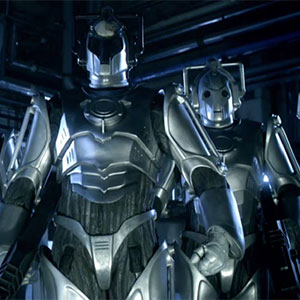

| Home The Doctors The Companions The Villains | |||||||
 |
|||||||
|
CybermenCybermen were originally a wholly organic species of humanoids originating on Earth's twin planet Mondas that began to implant more and more artificial parts into their bodies. This led to the race becoming coldly logical and calculating cyborgs, with emotions usually only shown when naked aggression was called for. With the demise of Mondas, they acquired Telos as their new home planet. They continue to be a recurring 'monster' within the Doctor Who franchise. The 2006 series introduced a totally new variation of Cybermen. These Cybus Cybermen were created in a parallel universe by the mad inventor John Lumic; he was attempting to preserve the life of a human by transplanting their brains into powerful metal bodies, sending them orders using a mobile phone network and inhibiting their emotions with an electronic chip. In November 2012, Neil Gaiman confirmed that the Cybermen would feature in an upcoming series 7 episode he has written.[100] This episode, "Nightmare in Silver, was broadcast in 2013. |
||||||